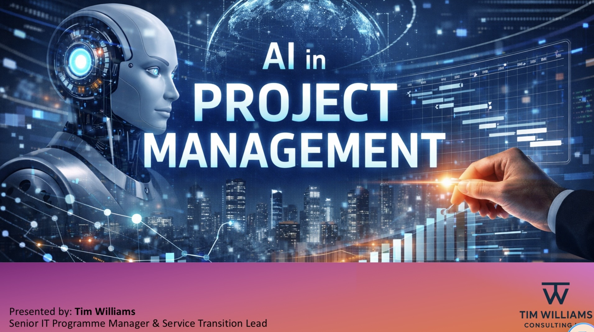

Practical, experience-led thinking on programme delivery, cyber security, cloud transformation and modern workplace change.
Featured Insight
Why Continuous Improvement Is the Engine of a Modern PMO
A PMO that doesn’t evolve becomes irrelevant. Continuous improvement transforms the PMO
from a reporting function into a strategic, value‑driven capability that adapts to change,
strengthens delivery performance, and builds organisational trust.
Modern PMOs face pressures from rapid innovation cycles, shifting priorities, rising
customer expectations, and distributed teams. Continuous improvement provides the
discipline and structure to respond predictably.
The CI cycle — Assess → Improve → Measure → Embed — strengthens PMO capability by:
Improving strategic value delivery
Increasing stakeholder confidence
Ensuring scalable, consistent processes
Driving data‑led decision making
Building cultural maturity and delivery excellence
In short: continuous improvement is not optional. It is the engine of PMO relevance,
maturity, and long‑term success.
Why a PMO Is Far More Than a Reporting Line
Too many organisations still treat the PMO as a reporting function — a place where data goes to die.
But a PMO isn’t a spreadsheet or a dashboard. It’s a strategic service that enables delivery, protects
commercial performance, and drives organisational maturity.
A great PMO doesn’t just track projects; it enables capability. It measures outcomes, manages
dependencies, and ensures change lands safely into BAU. It’s the bridge between project execution
and business value.
If your PMO isn’t driving measurable improvement, it’s time to rethink its purpose — not as a
back‑office function, but as a service that underpins organisational success.
AI Isn’t Replacing Project Managers — It’s Redefining What Great Looks Like
AI is becoming a strategic partner for modern PMs — accelerating clarity, improving prediction, strengthening stakeholder engagement and freeing leaders to focus on strategy, coaching and delivery excellence.
Over the past year, I’ve seen a clear shift: AI isn’t just another tool in the PM toolkit...
🔍 1. Clarity at Speed
AI can analyse complex project data in seconds...
📊 2. Predictive Insight
Instead of waiting for issues to surface...
🤝 3. Stronger Stakeholder Engagement
From summarising meetings to generating tailored updates...
🧩 4. More Time for Leadership
When AI handles the repetitive tasks...
AI won’t replace project managers. But project managers who embrace AI will absolutely outperform those who don’t.
Stakeholder Transformation Playbook: How Leaders Build Trust & Alignment
Transformations fail not because of technology, but because of misalignment, silence, and assumptions...
From Underperforming PMO to Strategic Partner: Delivering a Measurable Turnaround
A struggling PMO facing SLA failures, low morale, and declining client trust was transformed...
When a managed service enters a contract renewal phase...
⚠️ The Challenge
The PMO was experiencing systemic issues...
🎯 My Mandate
My role was to take operational control...
🧩 1. Structured Recovery
A hybrid Agile + Integrated Planning approach...
📘 2. Governance Reset
Using Six Sigma, continuous improvement...
🤝 3. Cultural Transformation
Structured interviews and open communication rebuilt trust...
📈 The Results
• Majority of projects moved from Red → Green
• CSAT increased from 3 → 7
• Revenue improved from -10% → +15%
• 100% SLA achievement

▶
Guest Speaker Session: AI in Project Management
A practical, research‑backed walkthrough of how AI is reshaping modern project delivery —
from forecasting and risk management to automation, resource optimisation and the evolving
role of the project manager. This session explores real‑world use cases, barriers to adoption,
and what the future PMO will look like in an AI‑driven world.
The Real Foundations of Successful Project Delivery
Why do so many projects fail despite perfect frameworks?
Because delivery isn’t a process problem — it’s a behaviour problem.
After 30+ years delivering complex IT, cloud, cyber and service transition programmes,
I’ve seen the same patterns repeat across organisations.
The projects that succeed share the same foundations. The ones that fail also share the
same foundations — just very different ones.
Here are the eight principles that consistently separate high‑performing delivery cultures:
Clarity of purpose
Governance that enables, not restricts
Stakeholder trust
Disciplined planning + adaptive execution
Ownership and accountability
Early risk management
Operational readiness
Leadership that sets the tone
If you want predictable outcomes — not just well‑documented processes — this is for you.
APM Volunteers' Development Forum 2026 – Honoured to Be Invited
Honoured to be invited by @AssociationforProjectManagement (APM) to share insights
on leadership, trust, and collaboration.
Elevate Your Outreach: APM & Skills Builder Partnership Training
Excited to be attending the “Elevate Your Outreach: APM & Skills Builder Partnership Training”
delivered by the Association for Project Management. A brilliant opportunity to strengthen how we
inspire the next generation of project professionals.
This training is designed to deepen our understanding of essential skills and their critical
importance in the modern workforce — and to help us translate that into meaningful, relatable
outreach for young people.
Key takeaways from the session include:
Enhancing understanding of essential skills and why they matter in today’s workforce
Building confidence in using these skills to make the project profession relatable and exciting for young people
Gaining practical guidance on supporting students effectively during outreach sessions
Equipping yourself with tools to bridge the gap between education and industry and leave a lasting impression
Investing in outreach isn’t just about giving back — it’s about shaping the future of our
profession and helping young people see what’s possible.
LinkedIn Post Version:
🚀 Excited to be attending the “Elevate Your Outreach: APM & Skills Builder Partnership Training”
delivered by the Association for Project Management.
This session is a fantastic opportunity to strengthen how we inspire the next generation of project
professionals by focusing on:
• Enhancing understanding of essential skills and their importance in the modern workforce
• Building confidence in using these skills to make the profession relatable and exciting for young people
• Gaining practical guidance on supporting students during outreach
• Equipping ourselves with tools to bridge the gap between education and industry
Explore my complete Continuing Professional Development log and full APM Competence Framework assessment — including reflective statements and all 29 competences with ratings and detailed descriptions.
Virtual Volunteer Session: Introduction to APM Apprenticeships – University of Northampton
Project management wasn’t my original destination — but it became the career that changed everything.
Next week I’ll be speaking at the University of Northampton about how APM Apprenticeships open doors
for students who want real responsibility, real experience, and real impact early in their careers.
Why Cyber Uplift Fails — And How to Fix It
Most cyber uplift programmes fail not because of technology, but because of governance, ownership and cultural resistance.
The Real Cost of Poor Service Transition
Service transition is often treated as an afterthought...
Delivering Cloud Adoption Without Disruption
Cloud transformation succeeds when it’s treated as a business change programme...
Modern Workplace: What CIOs Get Wrong
Technology alone doesn’t modernise a workplace...
Programme Leadership Roles
SC‑Cleared Programme Manager
Secure, high‑stakes programme leadership across government, defence and regulated environments.